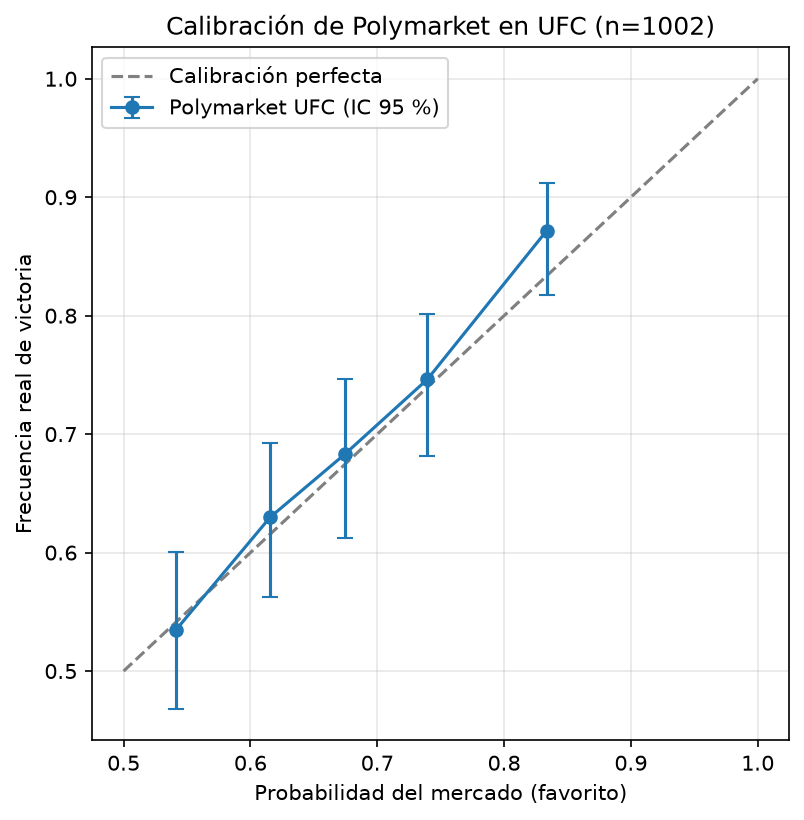

Cuando el mercado asigna 70 % de probabilidad a un favorito, ¿gana realmente alrededor del 70 % de las veces? Análisis de 1.002 peleas de UFC (abril de 2024 a octubre de 2026).

| Grupo | Peleas | Mercado dice | Real |
|---|---|---|---|
| 1 | 215 | 54,1 % | 53,5 % |
| 2 | 208 | 61,6 % | 63,0 % |
| 3 | 183 | 67,4 % | 68,3 % |
| 4 | 201 | 74,0 % | 74,6 % |
| 5 | 195 | 83,4 % | 87,2 % |